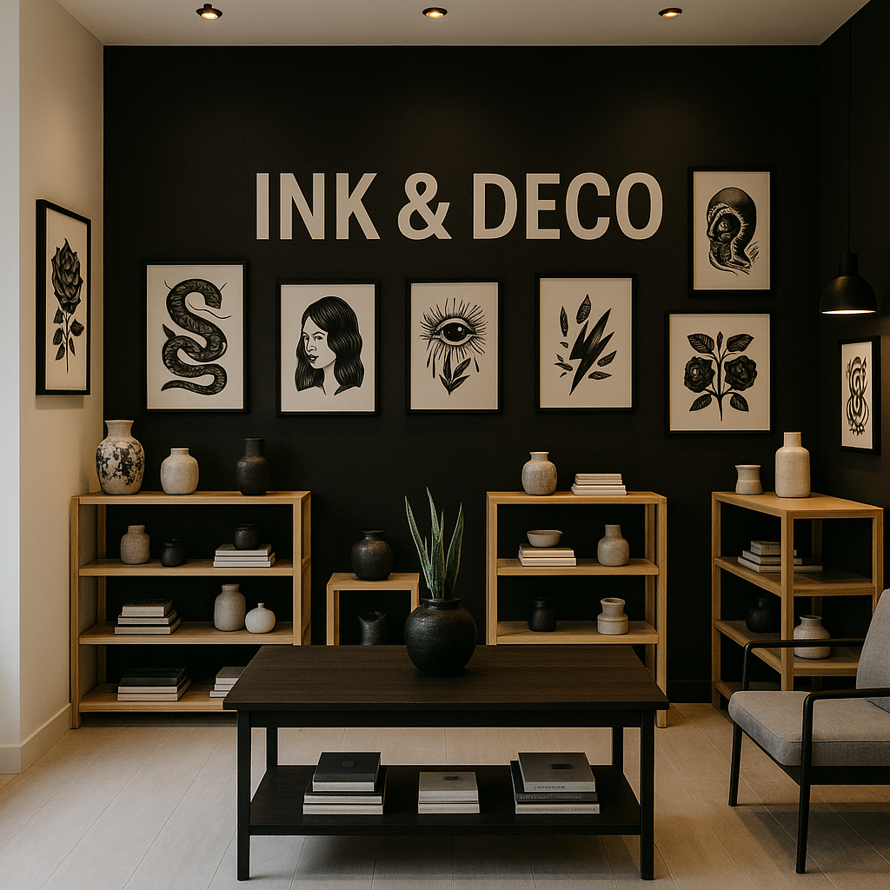

Nuestra historia
üåπ Ink & Deco nace en San Fernando, Buenos Aires, en el a√±o 2022, con una idea clara: transformar los espacios cotidianos en lugares con personalidad y estilo.
Inspirados por el arte del tatuaje —su precisión, su carácter, su fuerza estética— decidimos llevar esa esencia a la decoración y el diseño.
Creamos objetos con identidad, donde el diseño minimalista se une al estilo blackwork: líneas limpias, formas puras y contrastes intensos. Como un tatuaje, cada pieza Ink & Deco cuenta una historia en tu hogar y en tu estilo.
Desde láminas decorativas, stickers, textiles y más, todo lo que hacemos está pensado para que puedas expresarte y sentir que tu espacio habla de vos. En Ink & Deco, creemos que el diseño no es solo estética: es actitud.